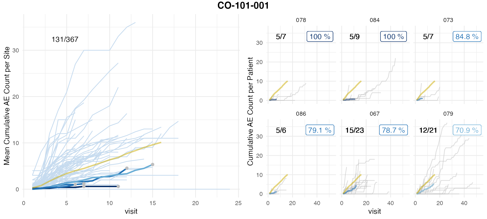

Typically clinical data is stored in several SAS files in a standardized format. We need the files in which the visits and the AEs are recorded. For this demo we have selected an anonymized data set which only contains patients enrolled into the control arm. In those data sets the AE onset dates and the visit dates have been replaced with the number of days that have passed since a specific cut-off date. However, the cleaning and joining logic is the same as for date columns.
df_ae <- haven::read_sas('adae.sas7bdat') %>%
select(STUDYID, SUBJID, SITEID, AESTDY) %>%
group_by(SUBJID) %>%
arrange(SUBJID, AESTDY) %>%
mutate(AENO = row_number())
df_ae## # A tibble: 4,702 x 5
## # Groups: SUBJID [360]
## STUDYID SUBJID SITEID AESTDY AENO
## <chr> <chr> <chr> <dbl> <int>
## 1 CO-101-001 01001001 001 -14 1
## 2 CO-101-001 01001001 001 -13 2
## 3 CO-101-001 01001001 001 50 3
## 4 CO-101-001 01001001 001 67 4
## 5 CO-101-001 01001001 001 77 5
## 6 CO-101-001 01001001 001 84 6
## 7 CO-101-001 01001001 001 99 7
## 8 CO-101-001 01001001 001 99 8
## 9 CO-101-001 01001001 001 127 9
## 10 CO-101-001 01001001 001 127 10
## # … with 4,692 more rows
df_vs <- haven::read_sas('advs.sas7bdat') %>%
select(STUDYID, SUBJID, SITEID, ADY) %>%
distinct() %>%
arrange(SUBJID, ADY) %>%
group_by(SUBJID) %>%
mutate(VISNO = row_number()) %>%
mutate(ADY_PREV = lag(ADY),
ADY_PREV = ifelse(is.na(ADY_PREV), - Inf, ADY_PREV),
MAX_VISNO = max(VISNO))
df_vs## # A tibble: 5,439 x 7
## # Groups: SUBJID [367]
## STUDYID SUBJID SITEID ADY VISNO ADY_PREV MAX_VISNO
## <chr> <chr> <chr> <dbl> <int> <dbl> <int>
## 1 CO-101-001 01001001 001 -7 1 -Inf 29
## 2 CO-101-001 01001001 001 1 2 -7 29
## 3 CO-101-001 01001001 001 8 3 1 29
## 4 CO-101-001 01001001 001 15 4 8 29
## 5 CO-101-001 01001001 001 29 5 15 29
## 6 CO-101-001 01001001 001 38 6 29 29
## 7 CO-101-001 01001001 001 43 7 38 29
## 8 CO-101-001 01001001 001 57 8 43 29
## 9 CO-101-001 01001001 001 64 9 57 29
## 10 CO-101-001 01001001 001 85 10 64 29
## # … with 5,429 more rowsWe need to join the visit and the AE dataset on the corresponding study day columns ADY and AESTDY. We are going to collect all AEs of a patient and assign them to the next visit. If there is no next visit we assign it to the last visit. If the study day (or date) for the AE is missing we will also assign that AE to the last visit. The easiest way to do this is to use SQL. We can use the sqldf package to perform that join for R dataframes. For other R methods for conditional joins see this blog post.
df_aevs <- sqldf::sqldf("
SELECT
df_vs.SUBJID,
df_vs.STUDYID,
df_vs.SITEID,
df_vs.VISNO,
df_vs.ADY_PREV,
df_vs.ADY,
df_ae.AESTDY,
df_ae.AENO
FROM df_vs
LEFT JOIN df_ae
ON df_ae.SUBJID = df_vs.SUBJID
AND df_ae.STUDYID = df_vs.STUDYID
AND df_ae.SITEID = df_vs.SITEID
AND (
-- match AEs to next visit
(df_ae.AESTDY <= df_vs.ADY AND df_ae.AESTDY > df_vs.ADY_PREV)
OR
-- match AEs that occured after last visit to last visit
(df_vs.VISNO = df_vs.MAX_VISNO AND df_ae.AESTDY > df_vs.ADY)
OR
-- match AEs with AESTDY NULL to last visit
(df_vs.VISNO = df_vs.MAX_VISNO AND df_ae.AESTDY IS NULL)
)
")
df_aevs <- as_tibble(df_aevs)
df_aevs## # A tibble: 7,952 x 8
## SUBJID STUDYID SITEID VISNO ADY_PREV ADY AESTDY AENO
## <chr> <chr> <chr> <int> <dbl> <dbl> <dbl> <int>
## 1 01001001 CO-101-001 001 1 -Inf -7 -14 1
## 2 01001001 CO-101-001 001 1 -Inf -7 -13 2
## 3 01001001 CO-101-001 001 2 -7 1 NA NA
## 4 01001001 CO-101-001 001 3 1 8 NA NA
## 5 01001001 CO-101-001 001 4 8 15 NA NA
## 6 01001001 CO-101-001 001 5 15 29 NA NA
## 7 01001001 CO-101-001 001 6 29 38 NA NA
## 8 01001001 CO-101-001 001 7 38 43 NA NA
## 9 01001001 CO-101-001 001 8 43 57 50 3
## 10 01001001 CO-101-001 001 9 57 64 NA NA
## # … with 7,942 more rowsNext we need to aggregate to the visit level.
df_aevs_aggr <- df_aevs %>%
group_by(STUDYID, SUBJID, SITEID, VISNO) %>%
summarize(AENO = max(AENO)) %>%
group_by(SUBJID) %>%
arrange(SUBJID, VISNO) %>%
fill(AENO, .direction = "down") %>%
mutate(AENO = ifelse(is.na(AENO), 0, AENO))
df_aevs_aggr## # A tibble: 5,439 x 5
## # Groups: SUBJID [367]
## STUDYID SUBJID SITEID VISNO AENO
## <chr> <chr> <chr> <int> <dbl>
## 1 CO-101-001 01001001 001 1 2
## 2 CO-101-001 01001001 001 2 2
## 3 CO-101-001 01001001 001 3 2
## 4 CO-101-001 01001001 001 4 2
## 5 CO-101-001 01001001 001 5 2
## 6 CO-101-001 01001001 001 6 2
## 7 CO-101-001 01001001 001 7 2
## 8 CO-101-001 01001001 001 8 3
## 9 CO-101-001 01001001 001 9 3
## 10 CO-101-001 01001001 001 10 6
## # … with 5,429 more rowsAs a control we check whether the numbers of visits and AEs of our processed data still matches the number of AEs in our original data.
After renaming some of the columns we can pass the aggregated data from the SAS files to simaerep
df_visit <- df_aevs_aggr %>%
rename(
study_id = "STUDYID",
site_number = "SITEID",
patnum = "SUBJID",
n_ae = "AENO",
visit = "VISNO"
)
df_visit## # A tibble: 5,439 x 5
## # Groups: patnum [367]
## study_id patnum site_number visit n_ae
## <chr> <chr> <chr> <int> <dbl>
## 1 CO-101-001 01001001 001 1 2
## 2 CO-101-001 01001001 001 2 2
## 3 CO-101-001 01001001 001 3 2
## 4 CO-101-001 01001001 001 4 2
## 5 CO-101-001 01001001 001 5 2
## 6 CO-101-001 01001001 001 6 2
## 7 CO-101-001 01001001 001 7 2
## 8 CO-101-001 01001001 001 8 3
## 9 CO-101-001 01001001 001 9 3
## 10 CO-101-001 01001001 001 10 6
## # … with 5,429 more rows
df_site <- df_visit %>%
simaerep::site_aggr()
df_site## # A tibble: 76 x 6
## study_id site_number n_patients visit_med75 n_pat_with_med75 mean_ae_site_me…
## <chr> <chr> <int> <dbl> <dbl> <dbl>
## 1 CO-101-… 001 5 6 3 4
## 2 CO-101-… 003 4 18 3 14.7
## 3 CO-101-… 005 2 9 2 8.5
## 4 CO-101-… 007 6 9 4 7.5
## 5 CO-101-… 009 2 5 1 15
## 6 CO-101-… 015 6 6 6 3.83
## 7 CO-101-… 017 2 11 1 22
## 8 CO-101-… 018 1 6 1 15
## 9 CO-101-… 019 4 8 3 4.33
## 10 CO-101-… 020 4 11 3 11.7
## # … with 66 more rows
df_sim_sites <- simaerep::sim_sites(df_site, df_visit, r = 1000, poisson_test = FALSE)
df_sim_sites## # A tibble: 76 x 6
## study_id site_number visit_med75 mean_ae_site_med… mean_ae_study_m… prob_low
## <chr> <chr> <dbl> <dbl> <dbl> <dbl>
## 1 CO-101-0… 001 6 4 5.16 0.429
## 2 CO-101-0… 003 18 14.7 11.1 1
## 3 CO-101-0… 005 9 8.5 7.04 1
## 4 CO-101-0… 007 9 7.5 7.05 1
## 5 CO-101-0… 009 5 15 4.35 1
## 6 CO-101-0… 015 6 3.83 5.17 0.328
## 7 CO-101-0… 017 11 22 7.62 1
## 8 CO-101-0… 018 6 15 5.11 1
## 9 CO-101-0… 019 8 4.33 6.28 0.373
## 10 CO-101-0… 020 11 11.7 7.64 1
## # … with 66 more rows
df_eval <- simaerep::eval_sites(df_sim_sites, r_sim_sites = 1000)
df_eval## # A tibble: 76 x 11
## study_id site_number visit_med75 mean_ae_site_me… mean_ae_study_m… prob_low
## <chr> <chr> <dbl> <dbl> <dbl> <dbl>
## 1 CO-101-… 078 7 0.6 5.69 0
## 2 CO-101-… 084 11 0.6 7.89 0
## 3 CO-101-… 073 6 1 5.21 0.006
## 4 CO-101-… 086 7 1.2 5.68 0.011
## 5 CO-101-… 067 12 4.53 8.63 0.014
## 6 CO-101-… 079 15 5.33 10.0 0.023
## 7 CO-101-… 071 12 2.67 8.39 0.069
## 8 CO-101-… 066 11 3.4 7.82 0.075
## 9 CO-101-… 085 24 0 14.6 0.097
## 10 CO-101-… 069 6 2.4 5.19 0.108
## # … with 66 more rows, and 5 more variables: n_site <int>,
## # prob_low_n_detected <int>, prob_low_fp <dbl>, prob_low_p_vs_fp_ratio <dbl>,
## # prob_low_prob_ur <dbl>
simaerep::plot_study(df_visit, df_site, df_eval, study = unique(df_visit$study_id))
Left panel shows mean AE reporting per site (lightblue and darkblue lines) against mean AE reporting of the entire study (golden line). Single sites are plotted in descending order by AE under-reporting probability on the right panel in which grey lines denote cumulative AE count of single patients. Grey dots in the left panel plot indicate sites that were picked for single plotting. AE under-reporting probability of dark blue lines crossed threshold of 95%. Numbers in the upper left corner indicate the ratio of patients that have been used for the analysis against the total number of patients. Patients that have not been on the study long enough to reach the evaluation point (visit_med75, see introduction) will be ignored.